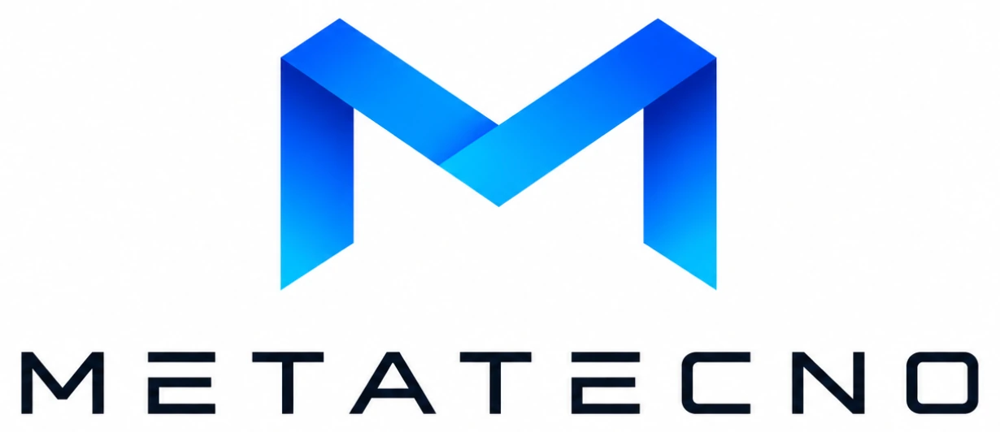
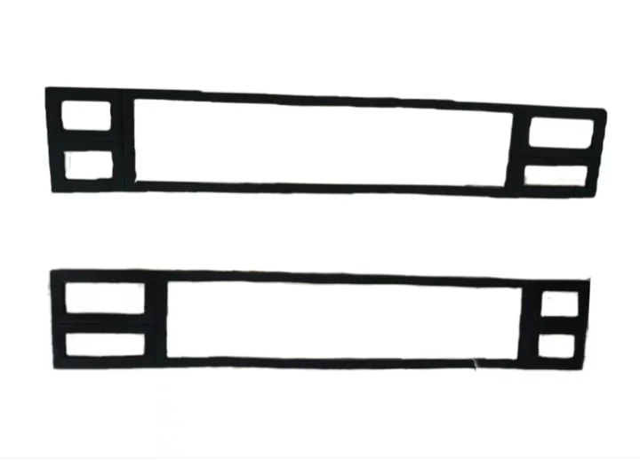
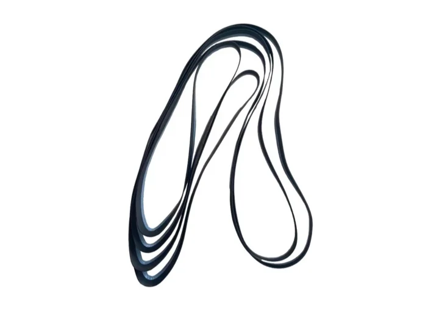
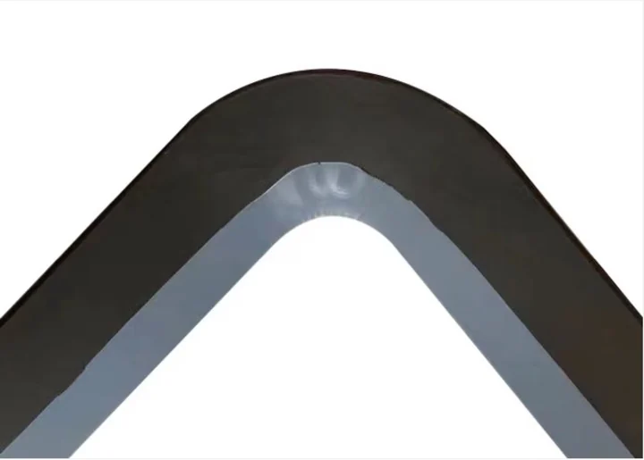
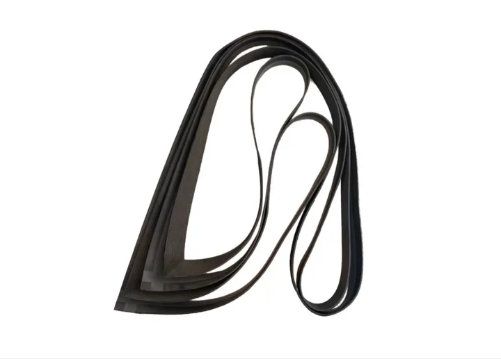
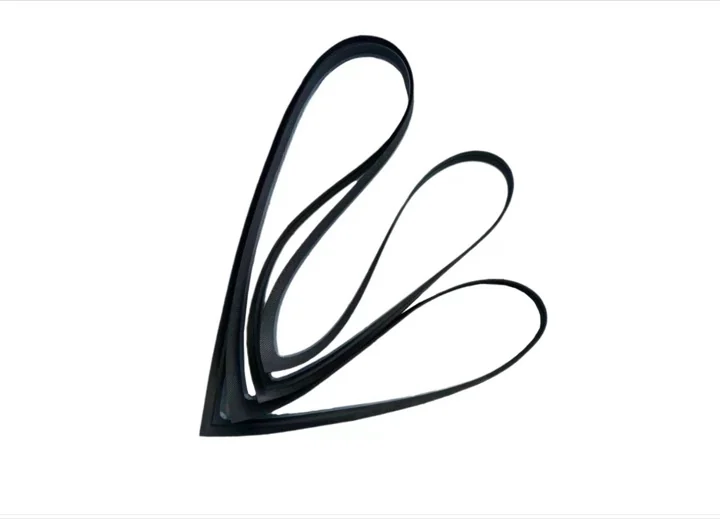
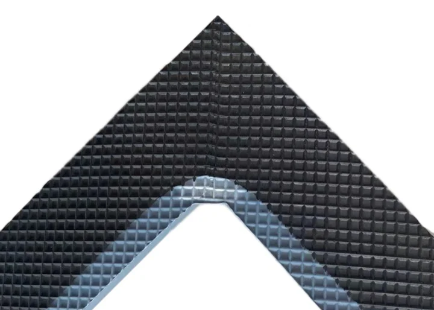

Колдонулушу
Өнүм хлор-щелоч өндүрүшүндөгү иондук мембрана электролизерлери үчүн; материал жана өлчөм чийме, үлгү, чөйрө, температура, басым жана орнотуу жери боюнча такталат.


Өнөр жай резина жана фторпласт тыгыздоо чечимдери, Электролизер ячейкалары жана тыгыздоо буюмдары.





Электролизер ячейкалары жана тыгыздоо буюмдары
| Өнүм коду | Чийме / долбоор коду боюнча |
|---|---|
| Колдонулушу | Өнүм хлор-щелоч өндүрүшүндөгү иондук мембрана электролизерлери үчүн; материал жана өлчөм чийме, үлгү, чөйрө, температура, басым жана орнотуу жери боюнча такталат. |
| Шайкеш электролизерлер | DD350, UHDE, INEOS, Asahi Kasei, BlueStar, Chlorine Engineers; чийме жана иштөө шарттары боюнча ырасталат |
| Материал | EPDM / FKM / NBR / PTFE / PFA / FEP / PVDF; чөйрө жана иш шарттары боюнча тандалат |
| Катуулук | колдонулганда резина бөлүктөрү үчүн 60-75 Shore A; чийме жана кошулма боюнча ырасталат |
| Иштөө температурасы | Резина бөлүктөрү үчүн адатта -40 Cден +120 Cге чейин; фторпласт бөлүктөр материал тандоосуна көз каранды |
| Химиялык чөйрө | Туз эритмеси, каустикалык сода, хлор тарабы жана коррозиялуу химиялык чөйрөлөр |
| Өлчөмдөр | Чийме, үлгү же жаңыртуу талабына ылайык |
| Өндүрүш көлөмү | Жаңы электролизер уячалары, тейлөө үчүн тыгыздоо бөлүктөрү жана мембрана аралык жаңыртуу долбоорлору |
| Сапат документтери | Текшерүү жазуулары буйрутма чиймеси жана сапат келишими боюнча |
Өнүм хлор-щелоч өндүрүшүндөгү иондук мембрана электролизерлери үчүн; материал жана өлчөм чийме, үлгү, чөйрө, температура, басым жана орнотуу жери боюнча такталат.
Өнүм хлор-щелоч өндүрүшүндөгү иондук мембрана электролизерлери үчүн; материал жана өлчөм чийме, үлгү, чөйрө, температура, басым жана орнотуу жери боюнча такталат.
Өнүм хлор-щелоч өндүрүшүндөгү иондук мембрана электролизерлери үчүн; материал жана өлчөм чийме, үлгү, чөйрө, температура, басым жана орнотуу жери боюнча такталат.
Өнүм хлор-щелоч өндүрүшүндөгү иондук мембрана электролизерлери үчүн; материал жана өлчөм чийме, үлгү, чөйрө, температура, басым жана орнотуу жери боюнча такталат.
Өнүм хлор-щелоч өндүрүшүндөгү иондук мембрана электролизерлери үчүн; материал жана өлчөм чийме, үлгү, чөйрө, температура, басым жана орнотуу жери боюнча такталат.
Өнүм хлор-щелоч өндүрүшүндөгү иондук мембрана электролизерлери үчүн; материал жана өлчөм чийме, үлгү, чөйрө, температура, басым жана орнотуу жери боюнча такталат.
Тандалган өнүмдөр
Metatecno